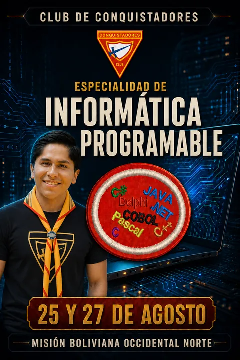
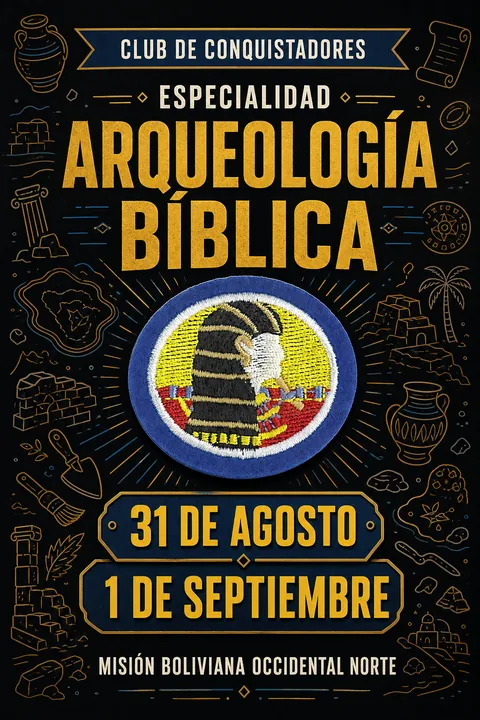
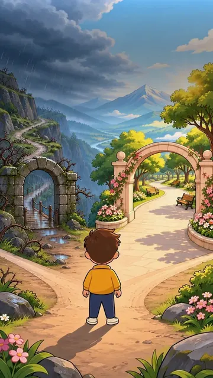
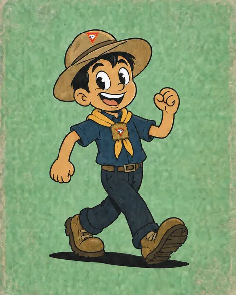

Afiches de especialidades
Serie para clubes de Conquistadores: un mismo sistema (título grande, emblema al centro, fecha en placa) que cambia de textura según el tema. Toca un afiche para verlo grande.
Edilson Byron Laura Mercado · La Paz, Bolivia
Ingeniero electrónico · Desarrollador full-stack · Automatización con IA
Hice sitios para clientes como Cox Automotive en CodeRoad y enseñé en la universidad. Hoy uno la ingeniería con el diseño: afiches, identidades, videos, sitios web y flujos con agentes de IA, cuidando que cada pieza se vea bien y funcione.




Índice
Cinco áreas que se apoyan entre sí: el diseño da la base, y el video, la foto, la web y la IA la llevan a cada pantalla.

Diseño gráfico y de marca
Jerarquía clara, contraste que se lee en un celular y una paleta que se repite en todo: así diseño afiches para eventos, identidades completas y logos que también viven en 3D.
Serie para clubes de Conquistadores: un mismo sistema (título grande, emblema al centro, fecha en placa) que cambia de textura según el tema. Toca un afiche para verlo grande.
Logo >e:, paleta verde y dorada, tipografía, íconos y banners para redes y GitHub.
El logo plano convertido en un diorama 3D interactivo (Three.js) para el sitio.

Cada formato con su propia composición, no un recorte del anterior.
Para la iglesia · Conquistadores y Ministerio Joven, MBON
Diseño con un agente que conoce los emblemas, pañoletas y uniformes oficiales, y que repara los símbolos cuando la IA los deforma. Así una serie entera sale coherente y fiel a la identidad del club.
Insignias para cursos y campamentos, pensadas para bordarse: pocos colores, borde grueso y texto que se lee a 8 cm.
Mapa ilustrado del mes: cada papiro es una actividad del club.
Excursiones, reuniones y celebraciones, listos para WhatsApp el mismo día: fecha, hora y lugar primero.
Poleras y conjunto deportivo para coordinadores de la MBON, con la cordillera como franja y tres paletas para elegir.
Video y animación
Escribo el guion, grabo o genero la voz, edito, animo y subtitulo. La serie «Escrito antes de ser descubierto» del canal Nativzar ya tiene siete capítulos.
Cap. 7 · NuevoDijeron que Salomón se equivocó con las hormigasProverbios 6:6–8 · 2:55
(abre YouTube) Cap. 6¿Curar sacando sangre?Levítico 17:11 · 2:51
(abre YouTube)
Cap. 6¿Curar sacando sangre?Levítico 17:11 · 2:51
(abre YouTube) Cap. 4¿Quién inventó la cuarentena?Levítico 13 · 1:46
(abre YouTube)
Cap. 4¿Quién inventó la cuarentena?Levítico 13 · 1:46
(abre YouTube) Cap. 3¿Senderos dentro del mar?Salmos 8:8 · 1:36
(abre YouTube)
Cap. 3¿Senderos dentro del mar?Salmos 8:8 · 1:36
(abre YouTube) Cap. 2Agua Viva: el secreto de la higieneLevítico 15:13 · 1:30
(abre YouTube)
Cap. 2Agua Viva: el secreto de la higieneLevítico 15:13 · 1:30
(abre YouTube) Cap. 1¿Por qué el mar nunca se llena?Eclesiastés 1:7 · 1:41
(abre YouTube)
Cap. 1¿Por qué el mar nunca se llena?Eclesiastés 1:7 · 1:41
(abre YouTube)
ReflexiónEl camino de la vidaMateo 7:13–14 · 0:53 (abre YouTube)Edición fotográfica
No solo recorto: integro personas y objetos reales a un diseño con la misma luz, color y sombra, y dejo cada pieza lista para imprimir, para miniatura o para una web liviana.
Sitios web y apps
Diseño y programo sitios rápidos, accesibles y en dos idiomas. Los publico en mi propio servidor y los pruebo en celular, tableta y escritorio antes de entregarlos.
Abrir kauxte.com
Mi estudio
Sitio de mis servicios de web y video, en español e inglés, con armador de presupuesto, logo 3D animado y un reproductor de video por capítulos.
 RepulgueSalteñería · menú y pedidos por WhatsAppDemo
RepulgueSalteñería · menú y pedidos por WhatsAppDemo Odontología Tres PicosConsultorio · servicios, equipo y primera visitaDemo
Odontología Tres PicosConsultorio · servicios, equipo y primera visitaDemo Puntada KantutaBordados · catálogo y cotizaciónDemo
Puntada KantutaBordados · catálogo y cotizaciónDemo NativzarProyectos cristocéntricos · Shorts y logo 3DPropio
NativzarProyectos cristocéntricos · Shorts y logo 3DPropioIA aplicada
Uso la IA como parte del taller, no como atajo: genero bocetos, voces y tomas, y después elijo, corrijo y termino cada pieza con criterio de diseño.

Personajes e ilustraciones con generadores de imagen, corregidos hasta respetar cada detalle del uniforme y los emblemas.
Tomas cinematográficas con Higgsfield y animación por código con Remotion.
Narraciones con ElevenLabs, voz clonada propia y limpieza de audio.
Desarrollo con Claude Code, Codex y Cursor. Agentes con LangGraph, CrewAI y n8n, y un flujo de agentes que diseña los afiches del club.
Ahora mismo
Quiero pasar del boceto al diseño de interfaz con un sistema ordenado antes de programarlo. Estoy practicando:
Herramientas
Trayectoria
Empecé diseñando placas y sistemas electrónicos, después hice sitios para clientes internacionales y enseñé en la universidad. De ahí viene mi manera de trabajar: medir, probar y cuidar que cada parte encaje.
Universidad Mayor de San Andrés, La Paz, con mención en Sistemas de Computación.
En la pasantía diseñé y armé unos diez circuitos, del esquema a la placa: un tablero interactivo para enseñar electrónica y el control de una máquina prensadora de alimentos. Mi proyecto de grado fue un sistema de asistencia biométrico con IoT y su web de reportes para el Instituto de Electrónica Aplicada.


App web de código abierto para adoptar mascotas: base de datos, backend en PHP y MySQL y despliegue en la nube. Ver el código
Sitios y experiencias digitales automotrices para clientes como Cox Automotive: implementación, QA y validación de migraciones, y trato directo en inglés con los clientes. Reconocido como TechStar of the Month · Customer Success Legend en septiembre de 2025.
Arquitectura de Computadoras, Sistemas Digitales I y II y Bases de Datos I en la Universidad Adventista de Bolivia, con materiales por competencias e IA en clase. En 2024 terminé el Diplomado en Educación Superior Basada en Competencias.
Bootcamp de despliegue en la nube y de IA agéntica en CodeRoad, hackatones de IA agéntica, cursos de Anthropic (Model Context Protocol, Claude Code in Action) y de LangGraph.
Herramientas para el Ministerio Joven: un sistema para evaluar eventos y campamentos, flujos de agentes que diseñan afiches y una app para las unidades de Conquistadores. Además, mi estudio Kauxte y el canal Nativzar.
Guía Mayor investido en diciembre de 2025, director del Club de Conquistadores de 2020 a 2024 y director de Ministerio Joven en 2017.
Para diseñar interfaces con sistema antes de programarlas.
Contacto
Afiches, un logo, un video para redes o un sitio web completo. Cuéntame qué necesitas y te respondo con una propuesta clara.